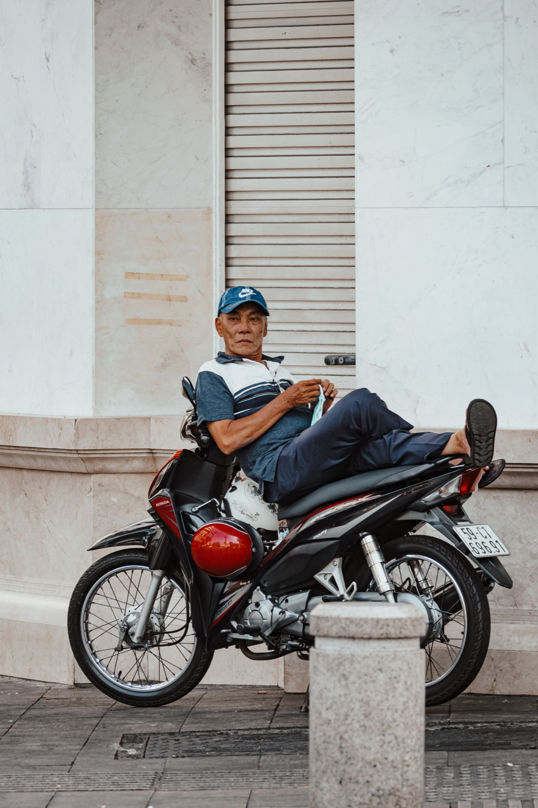

50cc 오토바이로 둘이 탈 수 있을까

평평한 냐짱 시내라면 상태 좋은 50cc로 성인 둘이 탈 수 있습니다. 하지만 가속과 제동 거리는 혼자 탈 때와 눈에 띄게 다릅니다. 출력만의 문제가 아닙니다: 총 무게, 엔진·브레이크·타이어 상태, 그리고 모델이 중요합니다.
동승자가 있으면 달라지는 것
- 특히 신호등에서 가속이 느려진다;
- 추월에 시간이 더 걸린다;
- 제동 거리가 늘어난다;
- 오르막에서 속도가 눈에 띄게 떨어진다;
- 요철이 서스펜션에 더 큰 부담을 준다.
그래서 혼자 탈 때의 경험을 둘이 탈 때 그대로 적용하면 안 됩니다. 처음 몇 킬로미터는 번잡하지 않은 곳에서 차분히 달리세요.
동승자의 올바른 자세

운전자의 두 발이 땅에 닿아 있을 때, 운전자의 신호에만 타고 내리세요. 동승자는 손잡이나 운전자를 잡고, 앞을 보고, 급하게 움직이지 않습니다. 둘 다 끈을 채운 헬멧을 쓰고, 발은 계속 동승자 발판 위에 둡니다.
외장에 적힌 숫자보다 무게가 중요하다
평평한 시내의 가벼운 두 사람과 산길의 배낭 멘 성인 둘은 완전히 다른 조건입니다. 허용 하중은 해당 모델의 서류에서 확인하세요. 서스펜션이 주저앉거나, 타이어가 바람 빠져 보이거나, 브레이크가 약하면 주행을 미루는 게 낫습니다.
시내와 오르막
시내 중심의 짧은 이동에는 50cc로 충분한 경우가 많습니다. 하지만 굽잇길, 긴 오르막, 장거리에는 출력 여유와 정상적인 브레이크가 필요합니다. 약한 가속을 늘 스로틀을 끝까지 감는 것으로 메우려 하지 마세요.
출발 전 확인할 것
- 앞뒤 타이어의 공기압과 상태.
- 앞뒤 브레이크 작동.
- 동승자 발판과 손잡이.
- 라이트, 브레이크등, 미러.
- 핸들의 자유로운 회전과 서스펜션 상태.
더 자세한 점검은 오토바이 체크리스트에 있습니다.
커플을 위한 50cc 고르기
디자인만 보지 마세요. 긴 시트, 편한 발판, 살아 있는 서스펜션, 예측 가능한 브레이크가 중요합니다. 둘이 함께 와서 자세를 직접 맞춰 보는 게 좋습니다. 주요 구조 비교는 50cc 오토바이 종류 글이 도움이 됩니다.
결론
모델이 하중을 감당한다면 상태 좋은 50cc로 시내에서 둘이 타는 것은 가능합니다. 다만 가속과 제동에 시간을 더 두고, 오르막과 장거리에서는 오토바이 능력을 낙관하지 말고 판단하세요.